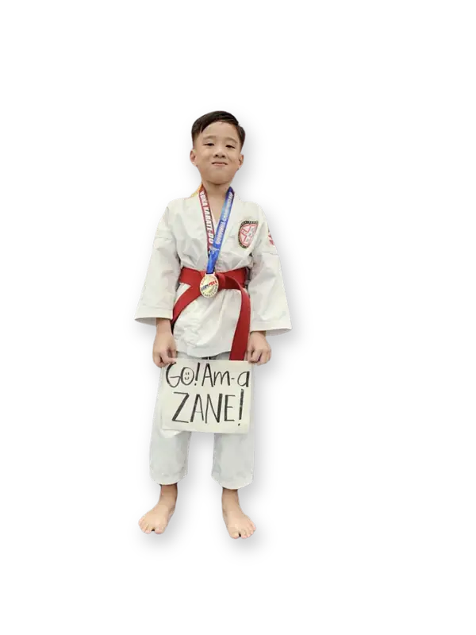
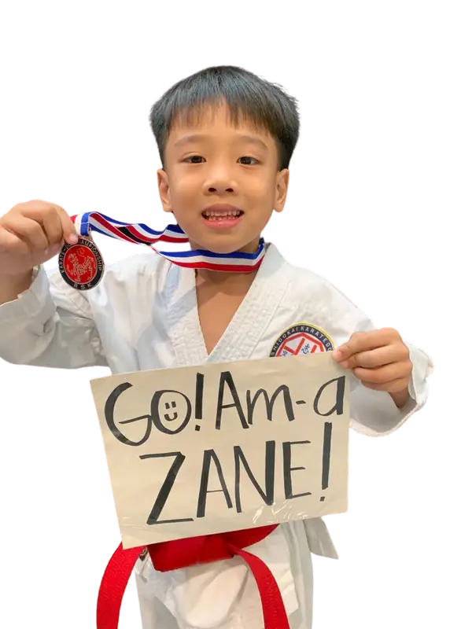
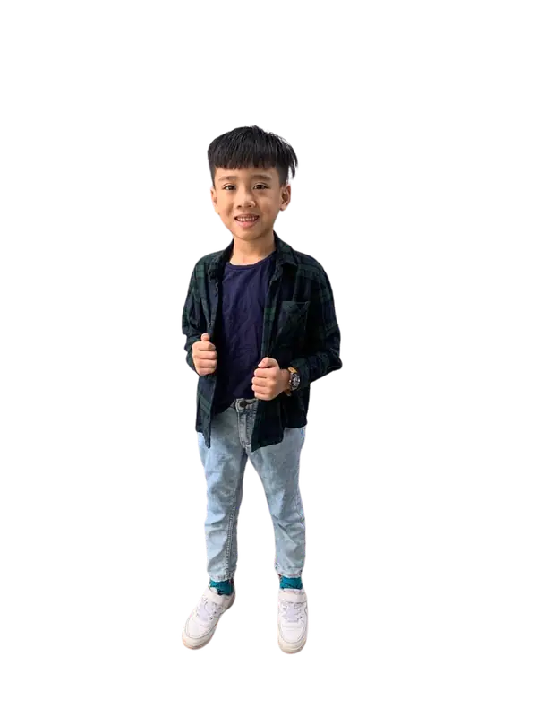

Early Journey
White Belt at age five, then Blue Belt on Sept. 17, 2023 and Red Belt on Dec. 17, 2023.
Learn MoreBuilding confidence, character and courage through Zane's karate journey.

Zane started karate at age five. What began with a love for martial-arts heroes became real training, discipline and a passion for competing.
Since July 2023, every class, belt promotion and tournament has helped him grow stronger, more focused and more confident.
Zane's belt journey follows White → Blue → Red → Orange → Green → Purple, with each stage marking more experience and responsibility.
White Belt at age five, then Blue Belt on Sept. 17, 2023 and Red Belt on Dec. 17, 2023.
Learn MoreOrange Belt on June 15, 2024 after skipping Yellow Belt, followed by Green Belt.
Learn MorePurple Belt from December 2024, continuing to train and compete through 2026.
Learn More
挑WHY KARATE
Competition gives Zane a chance to test what he has learned, handle pressure, celebrate progress and come back ready to improve.
Complete competition record through March 2026. Medal totals exclude DNQ and non-medal second-round finishes.
Robinsons Metro East
Robinsons Mall, Novaliches
Waltermart, Taytay
Tiendesitas, Ortigas
Robinsons Metro East
Tiendesitas, Ortigas
Greenhills Mall
Greenhills Mall
One Mall, Valenzuela
One Mall, Valenzuela
Robinsons Novaliches
Starmall, EDSA Shaw
Laguna Sports Complex
San Jose del Monte, Bulacan
Pasig
Waltermart Valenzuela
Robinsons Metro East, Cainta
Open Kata · Ages 8–12
Training, tournaments, medals, family and memories from Zane's karate journey.


SUPPORT ZANE'S JOURNEY
“Practicing karate is both enjoyable and potentially costly. I would greatly appreciate your assistance in helping me realize my dream, progressing one step at a time.”— Zane
